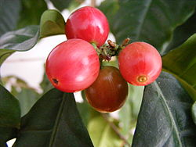
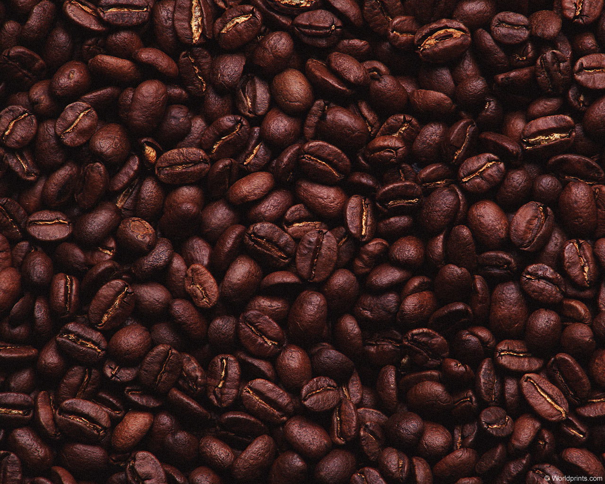
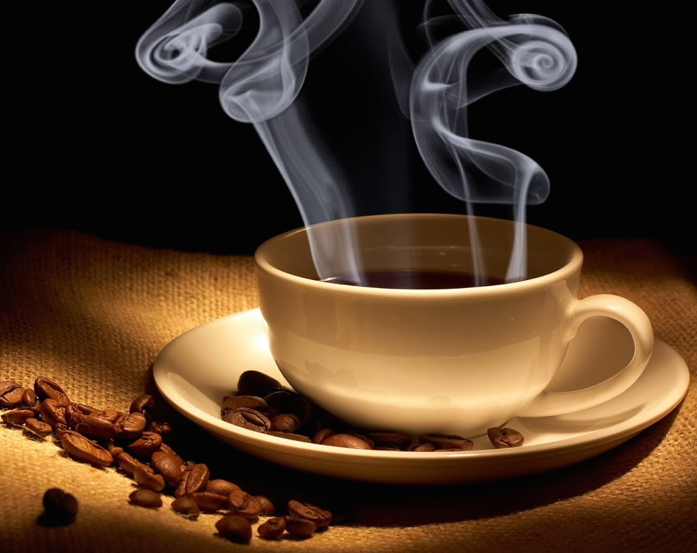

Process
Processing
Then they are sorted by ripeness and color and most often the flesh of the berry is removed, usually by machine, and the seeds are fermented to remove the slimy layer of mucilage still present on the seed. When the fermentation is finished, the seeds are washed with large quantities of fresh water to remove the fermentation residue, which generates massive amounts of coffee wastewater. Finally, the seeds are dried.
The best (but least used) method of drying coffee is using drying tables. In this method, the pulped and fermented coffee is spread thinly on raised beds, which allows the air to pass on all sides of the coffee, and then the coffee is mixed by hand. In this method the drying that takes place is more uniform, and fermentation is less likely. Most African coffee is dried in this manner and certain coffee farms around the world are starting to use this traditional method.
Next, the coffee is sorted, and labeled as green coffee. Another way to let the coffee seeds dry is to let them sit on a concrete patio and rake over them in the sunlight. Some companies use cylinders to pump in heated air to dry the coffee seeds, though this is generally in places where the humidity is very high.
Some coffee undergoes a peculiar process, such as kopi luwak. It is made from the seeds of coffee berries which have been eaten by the Asian Palm Civet and other related civets, passing through its digestive tract. This process resulted in coffee seeds with much less bitterness, widely noted as the most expensive coffee in the world with prices reaching $160 per pound.
Roasting

The next step in the process is the roasting of the green coffee. Coffee is usually sold in a roasted state, and with rare exceptions all coffee is roasted before it is consumed. It can be sold roasted by the supplier, or it can be home roasted. The roasting process influences the taste of the beverage by changing the coffee seed both physically and chemically. The seed decreases in weight as moisture is lost and increases in volume, causing it to become less dense. The density of the seed also influences the strength of the coffee and requirements for packaging.
The actual roasting begins when the temperature inside the seed reaches approximately 200 °C (392 °F), though different varieties of seeds differ in moisture and density and therefore roast at different rates. During roasting, caramelization occurs as intense heat breaks down starches, changing them to simple sugars that begin to brown, which alters the color of the seed.
Sucrose is rapidly lost during the roasting process and may disappear entirely in darker roasts. During roasting, aromatic oils and acids weaken, changing the flavor; at 205 °C (401 °F), other oils start to develop. One of these oils, caffeol, is created at about 200 °C (392 °F), which is largely responsible for coffee's aroma and flavor.
Brewing
Coffee seeds must be ground and brewed to create a beverage. The criteria for choosing a method include flavor and economy. Almost all methods of preparing coffee require that the seeds be ground and then mixed with hot water long enough to allow the flavor to emerge but not so long as to draw out bitter compounds. The liquid can be consumed after the spent grounds are removed. Brewing considerations include the fineness of grind, the way in which the water is to extract the flavor, additional flavorings such as sugar, milk, and spices, and the technique to be used to separate spent grounds. Ideal holding temperatures range from 85–88 °C (185–190 °F) to as high as 93 °C (199 °F) and the ideal serving temperature is 68 to 79 °C (154 to 174 °F).